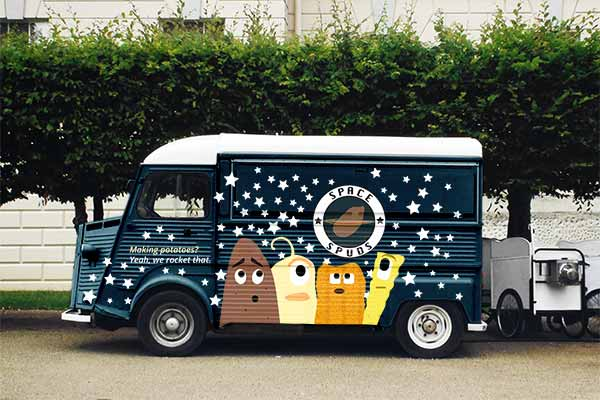

Task:
Task:
Space Spuds
The purpose of this project was to design a mobile website for a fictional food truck on the SUNY Oswego Campus. Link to the live site here!
The purpose of this project was to design a mobile website for a fictional food truck on the SUNY Oswego Campus. Link to the live site here!